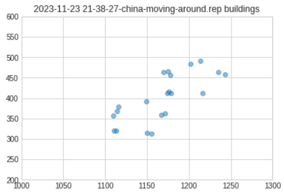

What
As with other strategic games that invole building a base, also in C&C Generals ZH, the order the player builds objects is vital to succeed in the game. In order to analyse build sequences we need to parse the replay file format of the game.

Contents
Contents
When
C&C Generals ZH came out in 2003 and I still play it from time to time. I’ve recorded videos of my game play and exported replay files. After playing around with the replay files and doing some statistics on them I could extract most of the information I was interested in.
Why
I’ve also written some scripts to automatically take screenshots surrounding the mouse cursor and the use image similarity hashes to compare them against known images.
Doing this I can extract build orders, but some clicks are missed and it’s difficult to also get positions of the objects on the game map. It becomes particularly challenging when moving around in the game as the viewing field also changes during game play.
Background
Binary formats
In contrast to human readable formats like comma-separeted (*.csv) files for spreadsheets
ColumnOne;ColumnTwo;ColumnThree;
Value;Value;Value;
Value;Value;Value;
or *.yaml files
table:
ColumnOne:
Value
Value
Value
ColumnTwo:
Value
Value
Value
[..]
Binary is just values one after the other. The structure is known only the the program reading and writing it. There may be Lengths-Fields (i.e. one value can be 20 indicating that another is 20 bytes long) or Conditional-Fields (i.e. a value only appears if another value is set to certain value).
To view such a file commonly hex-representation is used (8 bytes are two hex values). This is what it looks like using ‘:%xdd’ in the vim text editor.

(hex view of a C&C Generals ZH Replay-file)
Parsing Binary in Python
Like most programming languages Python has libraries to read values from binary formats.
In order to retrieve four bytes of an unsigned Integer you can use:
import struct
value = struct.unpack('I', f.read(4))[0]
Where ‘I’ in upper-case indicates “unsigned integer”. The ‘4’ indicates to read 4 bytes.
A sequence of bytes can be represent numeric values of various lengths (short, int, long, long long), positive values only (unsigned) or positive and negative values (signed).
Decimal values are usually stored in IEEE-754 format to allow larger value ranges. There powers of 10 are used. For example 2,230,000 is stored as 2.23 x 10^6.
There can also be text as seen the hex-view. Text is just multiple charcaters that together form a ‘string’. They are commonly null-terminated (‘\0’) to indicate the end.

(Python struct format options)
Assumptions
I had some simplifying assumptions to steer me in the right direction.
Replay isn’t encrypted or compressed
As we can see strings of text in the text editor and repeating patterns and, it wouldn’t make much sense to do so, it’s unlikely that the replays are encrypted or even compressed.
Replays consist of sequences of commands
With the replay feature we can export a replay and view it later. Since the file size of the replays are only a couple 100 Kilobytes it is clear that the replay feature relies on resimulating the game as opposed to recording a full video.
This is achieved by issuing the same commands the players issued during game play. Hence there have to be building construction commands in the replays that I can use to find the most efficient build sequences.
Use of packets
Since games can vary in length it is clear that the replay consists of some sort of repeating blocks (packets, chunks, segments…) on after another. These will likely not be of the same length as they can carry different amounts of information.
Packets have type field
With packets in the stream there is likely a “type” field to represent different kinds of information in the packets.
Packets have timestamps
Since, in a typical game, there can be anywhere from a single to thousands of units on the field the number of packets per moment in time has to be variable.
Hence there have to be time stamps in the data. These time stamps are usualy near the beginning of packet.
Byte Alignment
Usually in binary formats the fields are byte-aligned (1 Byte = 8 bits). In compression sometimes that is not the case in order to squeeze out a few bits to recuce the overall file size, but that requires a lot of effort on the developer. It’s safe to assume the values are byte-aligned in most cases.
How
Analysis
With the assumptions we have made we can start reverse engineering the replay file format first by applying statistics.
Finding timestamps
The first step I tool was to look for monotonously increasing numbers.
A game usually runs at 15 to 60 fps, given the typical length of game 30 minutes to a couple of hours, the timestamps are probably 32-bit unsigned integers. Signing them wouldn’t make sense as the game doesn’t play in the past. Using floats wouldn’t make sense due to the loss of accuracy for timestamps.
So we can look for unsigned integers.
with open(replay_file, "rb") as f:
while f.tell() < os.fstat(f.fileno()).st_size - 4:
value = struct.unpack("I", f.read(4))[0]
if 1000 < value < 1000000:
if len(values) > 0:
(_, last_value) = values[-1]
if last_value < value and last_value + 1000 > value:
values += [(f.tell() - 4, value)]
else:
values += [(f.tell() - 4, value)]
f.seek(f.tell() - 3)
return values
Tweaking the difference to the last value and plotting the values we get a quite obvious relation.
Looking at the difference of the positions we see that these monotonously increasing values are often 256 bytes appart from one another.
Whether the above is really a timestamp or just a monotonously increasing interger in the packets doesn’t really matter at this point. We’ve found positions in the proximity of packets and that’s what matters.
Finding type fields
Similar to above we can then search for type fields, just guessing they are also unsigned integer.
Here I’m searching for 100 possible integers after the presumed timestamp position.
def find_fields(replay_file, timestamps_positions, type_str):
results = []
with open(replay_file, "rb") as f:
for position in timestamps_positions:
f.seek(position)
arr = []
for i in range(0,100):
value = struct.unpack(type_str, f.read(4))[0]
if value > 5 and value < 10000: # assume type field between 5 and 10000
arr += [value]
if len(arr) > 0:
results += [(position, arr)]
return results
Looking at the frequency we see that the value 1092 appears 4514 times. Interesting.

512 : 8855
1092 : 4514
67 : 3959
575 : 1847
13 : 1763
3391 : 1147
I also found that it appears more or less often comparing different replay files of varying game play lenghth.
The “1092” is likely a packet type, but it appears much too frequent to be a move order, unit creation or build command.
Helper function
I’ve written a small helper function that I use below through-out.
It that takes a list of tuples :
[(fieldName, fieldType, fieldLength), ...]
so I can specify the format as
format1095_1 = [
("packetTime", "I", 4),
("packetType", "I", 4),
("unknown", "B", 1),
("unknown", "B", 1),
("unknown", "B", 1),
("unknown", "B", 1),
("unknown", "B", 1),
("unknown", "B", 1),
("unknown", "B", 1),
("unknown", "B", 1),
]
and just iterates over it reading every entry.
By adding/removing field until I get reasonable values we can see, if we can get reasonable output.
Parsing the Header
With some of the type fields values known we can make a reasonable guess about the length of the header. Just read until we read an unsigned integer somewhere in the same range as 1092. The header also contains printable characters.
19, ('game', 'c', 6) = GENREP_e_eT
20, ('unknown', 'B', 1) = 0
21, ('unknown', 'B', 1) = 0
22, ('unknown', 'B', 1) = 0
23, ('unknown', 'B', 1) = 0
24, ('unknown', 'B', 1) = 0
25, ('unknown', 'B', 1) = 0
26, ('unknown', 'B', 1) = 0
28, ('numTimecodes', 'h', 2) = 0
52, ('name', 'c', 0) = Last Replay
92, ('buildVersion', 'c', 0) = 5(Version 1.0
134, ('buildDate', 'c', 0) = Aug 30 2003 20:55:29
135, ('unknown_0', 'B', 1) = 0
136, ('unknown_0', 'B', 1) = 0
137, ('version_major', 'B', 1) = 1
138, ('unknown_0', 'B', 1) = 0
139, ('version_minor', 'B', 1) = 7
140, ('unknown_varies', 'B', 1) = 240
141, ('unknown_varies', 'B', 1) = 13
142, ('unknown_varies', 'B', 1) = 199
143, ('unknown_varies', 'B', 1) = 133
144, ('unknown_varies', 'B', 1) = 70
145, ('unknown_varies', 'B', 1) = 243
146, ('unknown_varies', 'B', 1) = 48
147, ('unknown_varies', 'B', 1) = 85
294, ('configuration', 'c', 0) = S=1;M=03maps/alpine assault;MC=DEA9E8E4;MS=275491;SD=30062703;C=100;SR=0;SC=50000;O=N;S=HC0D3R3D,0,0,TT,1,4,1,0,1:CH,-1,6,-1,1:X:X:X:X:X:X:;0
295, ('unknown_2', 'B', 1) = 2
296, ('unknown', 'B', 1) = 0
297, ('unknown', 'B', 1) = 0
298, ('unknown', 'B', 1) = 0
299, ('unknown', 'B', 1) = 0
300, ('unknown', 'B', 1) = 0
301, ('unknown', 'B', 1) = 0
302, ('unknown', 'B', 1) = 0
303, ('unknown_30', 'B', 1) = 30
304, ('unknown', 'B', 1) = 0
305, ('unknown', 'B', 1) = 0
306, ('unknown', 'B', 1) = 0
310, ('packetTime', 'I', 4) = 0
314, ('packetType', 'I', 4) = 1097
We can see a start tag, the replay name, a date that is likely the date the game was built (it came out in 2003) and some details on the map.
Finding coordinates
Float values are commonly used to store coordinates. We expect three in sequence for x,y and z coordinates.
They also have interesting properties:
- due to the enourmous value range from using the scientific notation, if you slip by a single bit during parsing a float the values will be way off.
- if you’re reading an unsigned integer as a float, in most cases you get a value in the power of 2 (256, 512, …).
That makes floats relatively easy so spot in binary files.
def find_float_values(replay_file, positions):
results = []
with open(replay_file, "rb") as f:
for position in positions:
arr = []
for i in range(0,50):
value = float(struct.unpack("f", f.read(4))[0])
if value > 5 and value < 3000: # reasonable range for a float coordinate (not e.g. e^+30)
arr += [value]
if len(arr) > 0:
results += [(position, arr)]
return results
I noticed that I was getting a lot of (512.0, coordinate, coordinatate) in my results list.
Just plotting the last two as x and y yields:


For a short and a long game. Looking at that we’ve definitely found game play coordinates.
Find other Packet Types
So 1092 seems to be a packet type. It’s likely that there are other packet types at least in the range of 1092 +/-100. Let’s count how many float values we find near them.
float_count_near_type_field = {}
for type_field in range(1092 - 100, 1092 + 100):
result = find_float_values_near_type_field(replay_file, type_field)
float_count_near_type_field[type_field] = len(result)
if len(result) > 10:
print(f"{type_field}: {len(result)}, ", end="")
1001: 34, 1003: 32, 1024: 21, 1027: 16, 1037: 22, 1038: 11, 1042: 14, 1047: 143, 1049: 12,
1052: 22, 1070: 11, 1082: 15, 1083: 34, 1084: 12, 1087: 14, 1092: 3640, 1095: 42, 1111: 16,
1137: 13, 1149: 20, 1154: 13, 1156: 14, 1157: 16, 1171: 11, 1173: 19, 1190: 11
Decode Construct Building
So there are 12 occurences of “1049” and “1084” near float values of ranges that could be coordinates.
I happen to know that I’ve build 12 buildings in that particular game. I tried it with multiple replays and building varying types of structures until I was sure. Plotting the coordinates near those packets yields the same pattern of building locations I built in the game.

We’ve established that there are frequent packet types like “1092”, but also “1049” and “1084” that likely have something to do with building construction.
- by building the same building 10 times I was able to increase and decrease the number of “1049” packets.
- by comparing their values to one another I was able to find field that seems to be the building type ids
- by interleaving known building type ids with unknown we get more buildings.

53149, ('packetTime', 'I', 4) = 912
53153, ('packetType', 'I', 4) = 1049
53154, ('unknown_1', 'B', 1) = 2
53156, ('unknown_2', 'H', 2) = 0
53158, ('unknown_3', 'H', 2) = 768
53160, ('unknown_4', 'H', 2) = 256
53162, ('unknown_5', 'H', 2) = 262
53164, ('unknown_6', 'H', 2) = 257
53166, ('buildingType', 'H', 2) = 1261 -- Gla Barracks
53167, ('unknown_', 'B', 1) = 0
53168, ('unknown_', 'B', 1) = 0
53172, ('x', 'f', 4) = 1279.33740234375
53176, ('y', 'f', 4) = 473.4322814941406
53180, ('z', 'f', 4) = 18.75
53184, ('unknown', 'I', 4) = 3222719460
15192, ('nextPacketTime', 'I', 4) = 1290
15196, ('nextPacketType', 'I', 4) = 1049
Decode Timestamp
By creating a video of game play with screen capture, creating two buildings in the game and analysing the replay alongside the video we can compare timeCode in the replay file to that of the video.
56536, ('timeCode', 'I', 4) = 978
56553, ('buildObjectId', 'H', 2) = 1994 -- Nuclear Reactor
video at 0m38s = 38s
178096, ('timeCode', 'I', 4) = 3099
178113, ('buildObjectId', 'H', 2) = 1996 -- Barracks
video at 1m47s = 107s
timecode_diff = 3099 - 978 = 2121
videotime_diff = 107s - 38s = 69s
-> approx 30:1 relation
228805, ('timeCode', 'I', 4) = 3984
228822, ('buildObjectId', 'H', 2) = 1999 -- Bunker
video at 2m18s = 138s
timecode_diff = 3984 - 2121 = 885
videotime_diff = 138s - 69s = 31s
-> approx 30:1 relation
So 30 ticks in the game correspond to 1 second.
Decode Create Unit
Next I wanted to find the packet to resemble create unit. So we build two buildings and inbetween create specific units. Then repeat with a different type of unit.
Eventually I was able to esablish that “1049” is a packet resembling the creation of units and decode a field the resembles the unit type.
164236, ('packetTime', 'I', 4) = 2812
164240, ('packetType', 'I', 4) = 1047
164241, ('is_2', 'B', 1) = 2
164242, ('is_0', 'B', 1) = 0
164243, ('is_0', 'B', 1) = 0
164244, ('is_0', 'B', 1) = 0
164245, ('is_1', 'B', 1) = 1
164246, ('is_0', 'B', 1) = 0
164247, ('is_2', 'B', 1) = 2
164248, ('unitType', 'B', 1) = 123 -- Gla Rebel
164249, ('buildingIdUnitWasCreated', 'B', 1) = 5
164250, ('is_0', 'B', 1) = 0
164251, ('is_0', 'B', 1) = 0
164252, ('incrementingUnitNumber', 'B', 1) = 1
164253, ('is_0', 'B', 1) = 0
164254, ('is_0', 'B', 1) = 0
164255, ('is_0', 'B', 1) = 0
164259, ('nextPacketTime', 'I', 4) = 2812
164263, ('nextPackageType', 'I', 4) = 1092
Decode Move Order
Using the same approach, building two known buildings and doing something inbetween, we can get the move order packets. Observing the number of occurrences of those packets and plotting the result also helps here.
385085, ('packetTime', 'I', 4) = 6702
385089, ('packetType', 'I', 4) = 1068
385090, ('is_2', 'B', 1) = 2
385091, ('is_0', 'B', 1) = 0
385092, ('is_0', 'B', 1) = 0
385093, ('is_0', 'B', 1) = 0
385094, ('is_1', 'B', 1) = 1
385095, ('is_6', 'B', 1) = 6
385096, ('is_1', 'B', 1) = 1
385100, ('x', 'f', 4) = 1174.520751953125
385104, ('y', 'f', 4) = 412.6291809082031
385108, ('z', 'f', 4) = 18.75
385112, ('nextPacketTime', 'I', 4) = 6703
385116, ('nextPacketType', 'I', 4) = 1092
Plotting the coordinates from these packages shows an ‘8’ shape. As I was moving the bulldozer around two bunkers that makes sense.

Complete Decode
With that information we can try to parse a full-replay file.
We’ve established some type fields:
the header
1092 - unknown occur very frequently
1049 - create building
1047 - create unit
1068 - move order
These seem to comprise most of the replay file.
It’s neccessary to skip packets of unknown content. As we haven’t found a packetLength field we’ll have to do this manualy by trying to detect integers in packetTypes range.
By doing this manually I’ve found there 7 packetTypes in a replay where I was only creating buildings and the construction dozer around.
formats = {
"1097" : (format1097, "unknown"),
"1092" : (format1092, "unknown"),
"1095" : (format1095, "unknown"),
"1003" : (format1003, "unknown"),
"1001" : (format1001, "unknown"),
"1049" : (format1049, "construct_building"),
"1068" : (format1068, "move_order"),
}
Creating units adds
"1047" : (format1047, "create_unit"),
The unknown ones are:
format1097 = [
("packetTime", "I", 4),
("packetType", "I", 4),
("unknown", "B", 1),
("unknown", "B", 1),
("unknown", "B", 1),
("unknown", "B", 1),
("unknown", "B", 1),
("unknown", "B", 1),
("unknown", "B", 1),
("unknown", "B", 1),
("unknown", "B", 1),
("unknown", "B", 1),
("unknown", "B", 1),
("unknown", "B", 1),
("unknown", "B", 1),
("unknown", "B", 1),
("nextPacketTime", "I", 4),
("nextPacketType", "I", 4),
]
format1092 = [
("packetTime", "I", 4),
("packetType", "I", 4),
("is_0", "I", 4),
("unknown", "h", 2),
("unknown", "h", 2),
("unknown", "h", 2),
("unknown", "h", 2),
("is_1", "I", 4),
("is_0", "I", 4),
("is_0", "I", 4),
("is_0", "I", 4),
("unknown", "I", 4),
("unknown", "I", 4),
("is_0", "I", 4),
("is_0", "I", 4),
("is_0", "I", 4),
("is_0", "B", 1),
("nextPacketTime", "I", 4),
("nextPacketType", "I", 4),
]
format1095 = [
("packetTime", "I", 4),
("packetType", "I", 4),
("unknown", "B", 1),
("unknown", "B", 1),
("unknown", "B", 1),
("unknown", "B", 1),
("unknown", "B", 1),
("unknown", "B", 1),
("unknown", "B", 1),
("unknown", "B", 1),
("unknown", "B", 1),
("unknown", "B", 1),
("unknown", "B", 1),
("unknown", "B", 1),
("unknown", "B", 1),
("unknown", "B", 1),
("nextPacketTime", "I", 4),
("nextPacketType", "I", 4),
]
format1003 = [
("packetTime", "I", 4),
("packetType", "I", 4),
("unknown", "B", 1),
("unknown", "B", 1),
("unknown", "B", 1),
("unknown", "B", 1),
("unknown", "I", 4),
("nextPacketTime", "I", 4),
("nextPacketType", "I", 4),
]
format1001 = [
("packetTime", "I", 4),
("packetType", "I", 4),
("unknown", "B", 1),
("unknown", "B", 1),
("unknown", "B", 1),
("unknown", "B", 1),
("unknown", "B", 1),
("unknown", "B", 1),
("unknown", "I", 4),
("unknown", "I", 4),
("nextPacketTime", "I", 4),
("nextPacketType", "I", 4),
]
format1068 = [
("packetTime", "I", 4),
("packetType", "I", 4),
("unknown_1", "B", 1),
("unknown_2", "H", 2),
("unknown_3", "H", 2),
("unknown_4", "H", 2),
("unknown_5", "H", 2),
("unknown_6", "H", 2),
("unknown_7", "H", 2),
("unknown_8", "B", 1),
("unknown_9", "B", 1),
("unknown_10", "H", 2),
("unknown_11", "H", 2),
("nextPacketTime", "I", 4),
("nextPacketType", "I", 4)
]
but there are likely more.
A full length replay files reads as follows:
=== ../../data/2023-11-23 21-38-27-china-moving-around.rep ===
> header
303, ('nextPacketType', 'I', 4) = 1097
> repetitions of 1092: 1
382, ('nextPacketType', 'I', 4) = 1095 -- unknown
404, ('nextPacketType', 'I', 4) = 1097 -- unknown
> repetitions of 1092: 100
6126, ('nextPacketType', 'I', 4) = 1095 -- unknown
> repetitions of 1092: 73
10309, ('nextPacketType', 'I', 4) = 1003 -- unknown
10325, ('nextPacketType', 'I', 4) = 1001 -- unknown
> repetitions of 1092: 27
11886, ('nextPacketType', 'I', 4) = 1095 -- unknown
> repetitions of 1092: 57
15157, ('nextPacketType', 'I', 4) = 1049 -- construct_building
> repetitions of 1092: 43
17647, ('nextPacketType', 'I', 4) = 1095 -- unknown
> repetitions of 1092: 100
23369, ('nextPacketType', 'I', 4) = 1095 -- unknown
> repetitions of 1092: 100
29091, ('nextPacketType', 'I', 4) = 1095 -- unknown
> repetitions of 1092: 100
34813, ('nextPacketType', 'I', 4) = 1095 -- unknown
> repetitions of 1092: 100
40535, ('nextPacketType', 'I', 4) = 1095 -- unknown
> repetitions of 1092: 100
46257, ('nextPacketType', 'I', 4) = 1095 -- unknown
> repetitions of 1092: 100
51979, ('nextPacketType', 'I', 4) = 1095 -- unknown
> repetitions of 1092: 100
57701, ('nextPacketType', 'I', 4) = 1095 -- unknown
> repetitions of 1092: 100
63423, ('nextPacketType', 'I', 4) = 1095 -- unknown
> repetitions of 1092: 35
65440, ('nextPacketType', 'I', 4) = 1049 -- construct_building
> repetitions of 1092: 65
69184, ('nextPacketType', 'I', 4) = 1095 -- unknown
> repetitions of 1092: 100
74906, ('nextPacketType', 'I', 4) = 1095 -- unknown
> repetitions of 1092: 100
80628, ('nextPacketType', 'I', 4) = 1095 -- unknown
> repetitions of 1092: 100
86350, ('nextPacketType', 'I', 4) = 1095 -- unknown
> repetitions of 1092: 100
92072, ('nextPacketType', 'I', 4) = 1095 -- unknown
> repetitions of 1092: 100
97794, ('nextPacketType', 'I', 4) = 1095 -- unknown
> repetitions of 1092: 56
101008, ('nextPacketType', 'I', 4) = 1049 -- construct_building
> repetitions of 1092: 44
103555, ('nextPacketType', 'I', 4) = 1095 -- unknown
> repetitions of 1092: 100
109277, ('nextPacketType', 'I', 4) = 1095 -- unknown
> repetitions of 1092: 100
114999, ('nextPacketType', 'I', 4) = 1095 -- unknown
> repetitions of 1092: 100
120721, ('nextPacketType', 'I', 4) = 1095 -- unknown
> repetitions of 1092: 100
126443, ('nextPacketType', 'I', 4) = 1095 -- unknown
> repetitions of 1092: 100
132165, ('nextPacketType', 'I', 4) = 1095 -- unknown
> repetitions of 1092: 39
134410, ('nextPacketType', 'I', 4) = 1049 -- construct_building
> repetitions of 1092: 61
137926, ('nextPacketType', 'I', 4) = 1095 -- unknown
> repetitions of 1092: 100
143648, ('nextPacketType', 'I', 4) = 1095 -- unknown
> repetitions of 1092: 100
149370, ('nextPacketType', 'I', 4) = 1095 -- unknown
> repetitions of 1092: 100
155092, ('nextPacketType', 'I', 4) = 1095 -- unknown
> repetitions of 1092: 100
160814, ('nextPacketType', 'I', 4) = 1095 -- unknown
> repetitions of 1092: 30
162546, ('nextPacketType', 'I', 4) = 1049 -- construct_building
> repetitions of 1092: 70
166575, ('nextPacketType', 'I', 4) = 1095 -- unknown
> repetitions of 1092: 100
172297, ('nextPacketType', 'I', 4) = 1095 -- unknown
> repetitions of 1092: 100
178019, ('nextPacketType', 'I', 4) = 1095 -- unknown
> repetitions of 1092: 100
183741, ('nextPacketType', 'I', 4) = 1095 -- unknown
> repetitions of 1092: 100
189463, ('nextPacketType', 'I', 4) = 1095 -- unknown
> repetitions of 1092: 19
190568, ('nextPacketType', 'I', 4) = 1068 -- move_order
> repetitions of 1092: 81
195212, ('nextPacketType', 'I', 4) = 1095 -- unknown
> repetitions of 1092: 20
196374, ('nextPacketType', 'I', 4) = 1068 -- move_order
> repetitions of 1092: 44
198909, ('nextPacketType', 'I', 4) = 1068 -- move_order
> repetitions of 1092: 36
200988, ('nextPacketType', 'I', 4) = 1095 -- unknown
> repetitions of 1092: 27
202549, ('nextPacketType', 'I', 4) = 1068 -- move_order
> repetitions of 1092: 73
206737, ('nextPacketType', 'I', 4) = 1095 -- unknown
> repetitions of 1092: 12
207443, ('nextPacketType', 'I', 4) = 1068 -- move_order
> repetitions of 1092: 88
212486, ('nextPacketType', 'I', 4) = 1095 -- unknown
> repetitions of 1092: 6
212850, ('nextPacketType', 'I', 4) = 1068 -- move_order
> repetitions of 1092: 94
218235, ('nextPacketType', 'I', 4) = 1095 -- unknown
> repetitions of 1092: 48
220993, ('nextPacketType', 'I', 4) = 1068 -- move_order
> repetitions of 1092: 52
223984, ('nextPacketType', 'I', 4) = 1095 -- unknown
> repetitions of 1092: 100
229706, ('nextPacketType', 'I', 4) = 1095 -- unknown
> repetitions of 1092: 22
230982, ('nextPacketType', 'I', 4) = 1068 -- move_order
> repetitions of 1092: 78
235455, ('nextPacketType', 'I', 4) = 1095 -- unknown
> repetitions of 1092: 31
237244, ('nextPacketType', 'I', 4) = 1068 -- move_order
> repetitions of 1092: 69
241204, ('nextPacketType', 'I', 4) = 1095 -- unknown
> repetitions of 1092: 35
243221, ('nextPacketType', 'I', 4) = 1068 -- move_order
> repetitions of 1092: 65
246953, ('nextPacketType', 'I', 4) = 1095 -- unknown
> repetitions of 1092: 29
248628, ('nextPacketType', 'I', 4) = 1068 -- move_order
> repetitions of 1092: 71
252702, ('nextPacketType', 'I', 4) = 1095 -- unknown
> repetitions of 1092: 72
256828, ('nextPacketType', 'I', 4) = 1049 -- construct_building
> repetitions of 1092: 28
258463, ('nextPacketType', 'I', 4) = 1095 -- unknown
> repetitions of 1092: 100
264185, ('nextPacketType', 'I', 4) = 1095 -- unknown
> repetitions of 1092: 100
269907, ('nextPacketType', 'I', 4) = 1095 -- unknown
> repetitions of 1092: 28
271525, ('nextPacketType', 'I', 4) = 1068 -- move_order
> repetitions of 1092: 72
275656, ('nextPacketType', 'I', 4) = 1095 -- unknown
> repetitions of 1092: 36
277730, ('nextPacketType', 'I', 4) = 1068 -- move_order
> repetitions of 1092: 64
281405, ('nextPacketType', 'I', 4) = 1095 -- unknown
> repetitions of 1092: 16
282339, ('nextPacketType', 'I', 4) = 1068 -- move_order
> repetitions of 1092: 71
286413, ('nextPacketType', 'I', 4) = 1068 -- move_order
> repetitions of 1092: 13
287181, ('nextPacketType', 'I', 4) = 1095 -- unknown
> repetitions of 1092: 91
292390, ('nextPacketType', 'I', 4) = 1068 -- move_order
> repetitions of 1092: 9
292930, ('nextPacketType', 'I', 4) = 1095 -- unknown
> repetitions of 1092: 97
298481, ('nextPacketType', 'I', 4) = 1068 -- move_order
> repetitions of 1092: 3
298679, ('nextPacketType', 'I', 4) = 1095 -- unknown
> repetitions of 1092: 100
304401, ('nextPacketType', 'I', 4) = 1095 -- unknown
> repetitions of 1092: 13
305164, ('nextPacketType', 'I', 4) = 1068 -- move_order
> repetitions of 1092: 69
309124, ('nextPacketType', 'I', 4) = 1068 -- move_order
> repetitions of 1092: 18
310177, ('nextPacketType', 'I', 4) = 1095 -- unknown
> repetitions of 1092: 48
312935, ('nextPacketType', 'I', 4) = 1068 -- move_order
> repetitions of 1092: 52
315926, ('nextPacketType', 'I', 4) = 1095 -- unknown
> repetitions of 1092: 31
317715, ('nextPacketType', 'I', 4) = 1068 -- move_order
> repetitions of 1092: 69
321675, ('nextPacketType', 'I', 4) = 1095 -- unknown
> repetitions of 1092: 16
322609, ('nextPacketType', 'I', 4) = 1068 -- move_order
> repetitions of 1092: 84
327424, ('nextPacketType', 'I', 4) = 1095 -- unknown
> repetitions of 1092: 19
328529, ('nextPacketType', 'I', 4) = 1049 -- construct_building
> repetitions of 1092: 81
333185, ('nextPacketType', 'I', 4) = 1095 -- unknown
> repetitions of 1092: 100
338907, ('nextPacketType', 'I', 4) = 1095 -- unknown
> repetitions of 1092: 67
342748, ('nextPacketType', 'I', 4) = 1068 -- move_order
> repetitions of 1092: 33
344656, ('nextPacketType', 'I', 4) = 1095 -- unknown
> repetitions of 1092: 67
348497, ('nextPacketType', 'I', 4) = 1068 -- move_order
> repetitions of 1092: 33
350405, ('nextPacketType', 'I', 4) = 1095 -- unknown
> repetitions of 1092: 99
356070, ('nextPacketType', 'I', 4) = 1068 -- move_order
> repetitions of 1092: 1
356154, ('nextPacketType', 'I', 4) = 1095 -- unknown
> repetitions of 1092: 52
359140, ('nextPacketType', 'I', 4) = 1068 -- move_order
> repetitions of 1092: 45
361732, ('nextPacketType', 'I', 4) = 1068 -- move_order
> repetitions of 1092: 3
361930, ('nextPacketType', 'I', 4) = 1095 -- unknown
> repetitions of 1092: 60
365372, ('nextPacketType', 'I', 4) = 1068 -- move_order
> repetitions of 1092: 40
367679, ('nextPacketType', 'I', 4) = 1095 -- unknown
> repetitions of 1092: 29
369354, ('nextPacketType', 'I', 4) = 1068 -- move_order
> repetitions of 1092: 71
373428, ('nextPacketType', 'I', 4) = 1095 -- unknown
> repetitions of 1092: 26
374932, ('nextPacketType', 'I', 4) = 1068 -- move_order
> repetitions of 1092: 74
379177, ('nextPacketType', 'I', 4) = 1068 -- move_order
379204, ('nextPacketType', 'I', 4) = 1095 -- unknown
> repetitions of 1092: 52
382190, ('nextPacketType', 'I', 4) = 1068 -- move_order
> repetitions of 1092: 48
384953, ('nextPacketType', 'I', 4) = 1095 -- unknown
> repetitions of 1092: 2
385089, ('nextPacketType', 'I', 4) = 1068 -- move_order
> repetitions of 1092: 57
388365, ('nextPacketType', 'I', 4) = 1068 -- move_order
> repetitions of 1092: 41
390729, ('nextPacketType', 'I', 4) = 1095 -- unknown
> repetitions of 1092: 13
391492, ('nextPacketType', 'I', 4) = 1068 -- move_order
> repetitions of 1092: 39
393742, ('nextPacketType', 'I', 4) = 1068 -- move_order
> repetitions of 1092: 46
396391, ('nextPacketType', 'I', 4) = 1068 -- move_order
> repetitions of 1092: 2
396532, ('nextPacketType', 'I', 4) = 1095 -- unknown
> repetitions of 1092: 100
402254, ('nextPacketType', 'I', 4) = 1095 -- unknown
> repetitions of 1092: 57
405525, ('nextPacketType', 'I', 4) = 1068 -- move_order
> repetitions of 1092: 43
408003, ('nextPacketType', 'I', 4) = 1095 -- unknown
> repetitions of 1092: 32
409849, ('nextPacketType', 'I', 4) = 1068 -- move_order
> repetitions of 1092: 68
413752, ('nextPacketType', 'I', 4) = 1095 -- unknown
> repetitions of 1092: 5
414059, ('nextPacketType', 'I', 4) = 1049 -- construct_building
> repetitions of 1092: 95
419513, ('nextPacketType', 'I', 4) = 1095 -- unknown
> repetitions of 1092: 100
425235, ('nextPacketType', 'I', 4) = 1095 -- unknown
> repetitions of 1092: 100
430957, ('nextPacketType', 'I', 4) = 1095 -- unknown
> repetitions of 1092: 100
436679, ('nextPacketType', 'I', 4) = 1095 -- unknown
> repetitions of 1092: 100
442401, ('nextPacketType', 'I', 4) = 1095 -- unknown
> repetitions of 1092: 150
450973, ('nextPacketType', 'I', 4) = 27 -- end
> Made it to
3607720 of 3607824 (100.00%)
We can create more replay files where we do additional things in the game and see which new packetTypes appear when parsing the replay files.
Conclusion
There is a lot more to uncover in the replay files.
To further decode we could:
- find the rest of the building type ids and unit type ids
- try to understand the remaining 6 packet types. Putting the values in a table and checking how the values change across packets and replay files could help.
- the 1092 packet is likely the camera position or units entering or leaving the screen. They contain coordinates, so this can probably easily be verified.
- there are more actions in the game like triggering a super weapon that likely have their own packet types
- there are probably some system diagnostics/time keeping packets
- find the packet length field. All packet types seem to start with a “10”. This is strange. Maybe the type field is infact short int, the length also and that would mean we might have missed some packets inbetween.
we can now
- analyse the build orders and compare
we could also
- write our own c&c generals zh replay player - through that would essentially mean writing almost the entire game